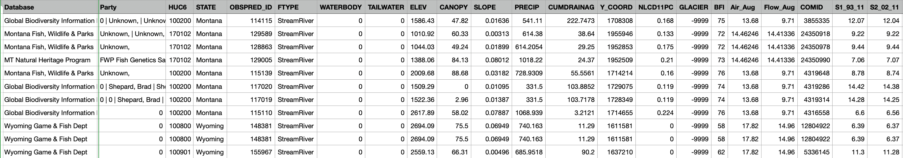
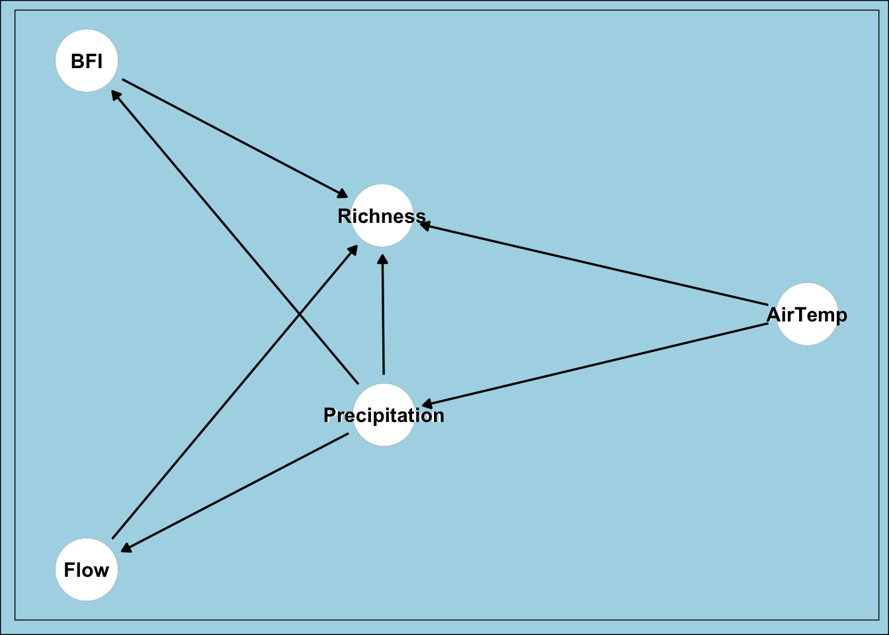

Code
set.seed(123)
library(tidyverse)
library(janitor)
library(here)
library(dagitty)
library(ggdag)
library(MASS)
library(broom)
library(knitr)
library(kableExtra)set.seed(123)
library(tidyverse)
library(janitor)
library(here)
library(dagitty)
library(ggdag)
library(MASS)
library(broom)
library(knitr)
library(kableExtra)Freshwater fish presence and species richness is a vital metric for stream health. Stream health is intrinsically tied to water quality, water availability, agriculture and industrial processes, making it incredibly important to local economies. Moreover, stream health is a major part of the recreation and tourism economies for stream-rich states like Montana, Wyoming, Idaho and the Dakotas. As global heating trends cause decreases in snowfall and increases in air temperature, these streams are at risk, and so are the fish that swim in them. In order to protect stream life, it’s important that we research the relationships between biotic factors and their environment. Precipitation is a key driver of stream conditions, controlling water volume, flow rates, turbidity, and temperature—factors that determine which fish species can thrive in a given stream. By identifying direct relationships between precipitation and species richness, we can build a better idea of how we can expect or freshwater ecological landscape to change in the coming years; and ideally how we can preserve our freshwater resources for future generations.
knitr::include_graphics(here("images", "big_hole.jpeg"))Big Hole River, Montana, September 2023. Photo credit Henry Oliver
How is freshwater fish diversity affected by precipitation in Northwest rivers and streams?
The null hypothesis for this experiment is that precipitation has no effect on species richness.
\[H_0: \beta_{\text{precip}} = 0\]
The alternative hypothesis is that precipitation has an effect on species richness.
\[H_A: \beta_{\text{precip}} \not= 0\]
The data used in the this analysis is the The University of Wyoming Stream Species Dataset[1]. This multi-generational composition is a species presence dataset containing presence locations for 116 freshwater fish species in Wyoming, Montana, and the surrounding states dating back to the year 1900. It contains data from 40,490 unique sample events (location, month, year), and was compiled by combining data from agency databases, the Global Biodiversity Information Facility, university theses, peer-reviewed literature, grey-literature reports, and unpublished data from the University of Wyoming. Please note that absence (0) values only indicate that a species was not recorded by observers and should not be used as true absences in analyses.
knitr::include_graphics(here("images", "data-1.png"))
Raw data from University of Wyoming Stream Species Dataset
knitr::include_graphics(here("images", "data-2.png"))
Raw data from University of Wyoming Stream Species Dataset
knitr::include_graphics(here("images", "study_area.png"))
Study area for University of Wyoming Stream Species Dataset
I’ll be modeling the relationship between precipitation and fish species richness using a negative binomial model.
Precipitation: Mm precipitation recorded during the month of observation
Base Flow Index (BFI): Expression of groundwater vs. surface water flow in for each water body.
Air Temperature: Average air temperature during the month of August for each river. NOT For each year. These temperatures are a regional average over many years.
Flow: Many-year average flow rate during the month of August for each river.
Richness: Number of species observed in a given stream
dag <- dagitty('
dag {
"Precipitation" -> "Richness"
"Precipitation" -> "Flow" -> "Richness"
"Precipitation" -> "BFI" -> "Richness"
"AirTemp" -> "Precipitation"
"AirTemp" -> "Richness"
}
')
# Plot Dag
ggdag(dag) +
geom_dag_point(color = "white") +
geom_dag_text(color = "black") +
theme_minimal() +
theme(
panel.background = element_rect(fill = "lightblue"),
plot.background = element_rect(fill = "lightblue"),
axis.text = element_blank(),
axis.title = element_blank(),
axis.ticks = element_blank(),
panel.grid = element_blank()
)
This directed acyclic graph (DAG) represents the hypothesized causal relationships between environmental variables and fish species richness in streams. Precipitation has both direct and indirect effects on species richness. Directly, precipitation levels may influence habitat availability and water chemistry. Indirectly, precipitation affects richness through two pathways: stream flow (higher precipitation increases flow rates) and baseflow index (BFI), which measures the proportion of streamflow from groundwater sources vs precipitation for a given stream. Air temperature also plays a dual role – it influences precipitation patterns (warmer air affects rainfall and snowfall) and has a direct effect on species richness by affecting water temperature and the movement and feeding patterns of fish.
This data set has over 40,000 entries of varying quality dating back to 1800. So we’ll want to filter some of that information out. For this analysis, I’ll just be looking at the last available 50 years of data. In order to simplify things, we’ll also only be looking at the month of August, for which average air temperatures and flow rates have been recorded for each stream in the dataset. August is also notably the peak of this fishing season in Montana and Wyoming. The filter() function narrows our time-frame, and the select() function below removes some of the columns that are not necessary for this analysis
fish_raw <- read_csv(here("data","StreamSpeciesDataset_v1_1_3_edited.csv")) %>%
clean_names() %>%
filter(year >= 1972, year <= 2022) %>% # 50 Years of data
filter(month %in% c("8")) # Month of augustRight now, our data table has one column for each species of fish, with a value of 1 or 0 indicating presence or non-presence. For analysis like these, ‘long’ formatted data is better. So we’re going to pivot our columns for each species into two columns, one for ‘species’ and one for ‘presence’.
# Pivot longer so that each species has it's own row
fish_long <- pivot_longer(fish_raw,
cols = c("bct", "crct", "crrb", "eb",
"ll", "bull", "gr", "onc",
"tgt", "spk", "srct", "wct",
"yct", "cut", "cis", "lwf",
"gt", "rb", "kok", "pwf",
"mwf", "lt", "lmb", "smb",
"bg", "pump", "gsun", "blcr",
"whcr", "wbs", "rkb", "nrbdc",
"bmsh", "cmsh", "lsch", "rdsh",
"rtch", "lkch", "hhch", "gila",
"smmn", "wsmn", "brmn", "plmn",
"ws_plmn", "stch", "fsdc", "sfch",
"npdc", "str", "pea", "gsh",
"emsh", "spsh", "sdsh", "fhmn",
"fhch", "spdc", "lndc", "rssh",
"crch", "gdf", "carp", "blbh",
"ylbh", "ccat", "scat", "ling",
"drum", "gar", "pkf", "ptmn",
"ge", "pf", "iowa", "jdt",
"odt", "yp", "sgr", "we",
"np", "tim", "rmcot", "mcot",
"colcot", "pcot", "slcot", "tcot",
"spcot", "cfcot", "rbsm", "brsb",
"wstrg", "pstrg", "sstrg", "rcsu",
"lnsu", "wsu", "lssu", "mtsu",
"plsu", "bsu", "smbuf", "bmbuf",
"bhsu", "gsu", "b_hx_wsu", "fmsu",
"f_mx_bhsu", "f_mx_wsu", "utsu", "qbk",
"shrh", "trpr", "gam", "gzs"
),
names_to = "species_0",
values_to = "present_0")Now we still have about 65 columns that we don’t need. Let’s clean it up a bit and only get the columns we want. We’re looking at precipitation, air temperature, base-flow index, flow, and species presence. It also won’t hurt to keep stream names, year and location.
# Select relevent columns
fish_long_filtered <- fish_long %>%
dplyr::select(gnis_name, month, year, state, precip, air_aug, bfi, flow_aug, present_0, species_0)Let’s take a look at our data after the transformations.
knitr::kable(head(fish_long_filtered),
caption = "Transformed Fish Data")| gnis_name | month | year | state | precip | air_aug | bfi | flow_aug | present_0 | species_0 |
|---|---|---|---|---|---|---|---|---|---|
| Spanish Creek | 8 | 1980 | Montana | 541.11 | 13.68 | 75 | 9.71 | 0 | bct |
| Spanish Creek | 8 | 1980 | Montana | 541.11 | 13.68 | 75 | 9.71 | 0 | crct |
| Spanish Creek | 8 | 1980 | Montana | 541.11 | 13.68 | 75 | 9.71 | 0 | crrb |
| Spanish Creek | 8 | 1980 | Montana | 541.11 | 13.68 | 75 | 9.71 | 1 | eb |
| Spanish Creek | 8 | 1980 | Montana | 541.11 | 13.68 | 75 | 9.71 | 0 | ll |
| Spanish Creek | 8 | 1980 | Montana | 541.11 | 13.68 | 75 | 9.71 | 0 | bull |
We want a sum of the number of species observed per river per August of each year, but we don’t want any duplicates of species being counted in the richness, so let’s get a unique richness count for each summer fishing season.
aug_richness <- fish_long_filtered %>%
filter(present_0 == 1) %>% # Only keep rows where species is present
group_by(gnis_name, year) %>%
summarize(
richness = n_distinct(species_0), # Count distinct species, avoid duplicates
mean_precip = mean(precip),
mean_bfi = mean(bfi),
air_aug = mean(air_aug),
flow_aug = mean(flow_aug)
)Let’s take a look at our raw data
# Plot richness as a function of precipitation
ggplot(aug_richness, aes(x = mean_precip, y = richness)) +
geom_point(alpha = 0.3) +
geom_smooth(method = "loess", color = "red") + # Local smoothing line of best fit
# Assumes linearity/non-linearity is unknown
labs(
title = "Raw Data: Precipitation vs Species Richness",
x = "Mean Precipitation (mm)",
y = "Species Richness"
) +
theme_minimal()
Now we have totals of the number of species observed during August of each year for each River in our dataset. We also have average BFI and Precipitation for July and August, and regional averages August air temperature and flow rate across all years. I want to look at the relationship between richness and precipitation, while using flow, air temperature, and base-flow index as parameters. Since our richness is a count variable, we should use a Poisson or a Negative Binomial model. I’m choosing to use a Negative Binomial model due to the likelihood that my data is ‘overdispersed’.
Overdispersion occurs where the variance in the data exceeds the mean—a violation of the Poisson distribution’s assumption that mean equals variance. Ecological count data are particularly prone to overdispersion because species observations are influenced by numerous factors that can’t be accounted for in our model. Factors like sampling variations, waste discharge, and food availability. Fish communities may cluster together in very small or inaccessible locations, leading to some sites with many species and others with very few, creating higher variance than a Poisson model can accommodate. The Negative Binomial model addresses this by including an additional dispersion parameter, theta, making it more flexible and appropriate for ecological count data. Let’s take a look.
Let’s take a look.
\[ \begin{aligned} Richness_{it} &\sim \text{Negative Binomial}(\mu_{it}, \theta) \\ \log(\mu_{it}) &= \beta_0 + \beta_1 \text{precip}_{it} + \beta_2 \text{temp}_{it} + \beta_3 \text{flow}_{it} + \beta_4 \text{bfi}_{it} \end{aligned} \]
Here we are modeling species Richness for each stream (i) in year (t) using a negative binomial generalized linear model. The expected richness (mu) is linked to environmental predictors through a log link function. We included monthly precipitation (precip), regional average air temperature (temp), regional average river flow (flow), and average baseflow index (bfi) as predictors for species richness. The dispersion parameter (Theta) quantifies the variability in richness beyond what would be expected under a standard Poisson model.
Before we specify our model, let’s take a look at it in action with simulated data.
To aide in our understanding and assess the validity of the Negative Binomial model, we want to see if it can work with fake data. In this example, we will generate a synthetic dataset with known parameters, fit our Negative Binomial model to that data, and then compare the model’s estimated coefficients to the true values we used to create the data. If the model successfully recovers parameters close to our known true values, this validates that the Negative Binomial approach is working correctly and can reliably estimate relationships in count data.
# Set seed for reproducibility
set.seed(123)
# Create fake predictor data
n_obs <- 1000
fake_obs <- data.frame(
f_mean_precip = runif(n_obs, min = 0, max = 200),
f_air_aug = runif(n_obs, min = 10, max = 25),
f_flow_aug = runif(n_obs, min = 50, max = 300),
f_mean_bfi = runif(n_obs, min = 0.2, max = 0.8)
)We’ll need an intercept (beta 0), a beta coefficient for each of our parameters values, and a dispersion parameter (theta).
# Set "true" coefficients
true_beta0 <- 2
true_beta_precip <- 0.05
true_beta_air <- - 0.5
true_beta_flow <- 0.001
true_beta_bfi <- 0.01
true_theta <- 2.5Here we’re generating data that follows the rules we set above with our coefficients.
# Get richness in link space
log_richness <- true_beta0 +
true_beta_precip * fake_obs$f_mean_precip +
true_beta_air * fake_obs$f_air_aug +
true_beta_flow * fake_obs$f_flow_aug +
true_beta_bfi * fake_obs$f_mean_bfi
# Take estimate out of link space to get actual richness values
richness <- exp(log_richness)rnbinomfake_obs$richness <- rnbinom(n = n_obs, mu = richness, size = true_theta)We’ll be using the Negative Binomial GLM function glm.nb from the MASS package.
sim_model <- glm.nb(richness ~ f_mean_precip + f_air_aug+ f_flow_aug + f_mean_bfi,
data = fake_obs)comparison <- data.frame(
Parameter = c("Intercept", "Precipitation", "Air Temp", "Flow", "BFI", "Theta"),
True_Value = c(true_beta0, true_beta_precip, true_beta_air,
true_beta_flow, true_beta_bfi, true_theta),
Estimated_Value = c(coef(sim_model), sim_model$theta)
)
# Display table
kable(comparison, digits = 4,
caption = "Comparison of True vs Estimated Parameters") %>%
kable_styling(bootstrap_options = c("striped", "hover"))| Parameter | True_Value | Estimated_Value | |
|---|---|---|---|
| (Intercept) | Intercept | 2.000 | 2.0040 |
| f_mean_precip | Precipitation | 0.050 | 0.0506 |
| f_air_aug | Air Temp | -0.500 | -0.5071 |
| f_flow_aug | Flow | 0.001 | 0.0010 |
| f_mean_bfi | BFI | 0.010 | 0.1625 |
| Theta | 2.500 | 3.1778 |
The model successfully recovers parameters close to our true values, demonstrating that the Negative Binomial model works as expected. Now let’s apply this same approach to our real data.
Now we’ll fit our model with our actual data
nb_mod <- glm.nb(richness ~ mean_precip + air_aug + flow_aug + mean_bfi,
data = aug_richness
)Now, let’s take a look at our model coefficients
tidy(nb_mod) %>%
kable(digits = 4, caption = "Negative Binomial Model Summary")| term | estimate | std.error | statistic | p.value |
|---|---|---|---|---|
| (Intercept) | 1.6960 | 0.2022 | 8.3868 | 0.0000 |
| mean_precip | -0.0010 | 0.0000 | -21.2738 | 0.0000 |
| air_aug | 0.0425 | 0.0070 | 6.0495 | 0.0000 |
| flow_aug | 0.0049 | 0.0017 | 2.7948 | 0.0052 |
| mean_bfi | -0.0115 | 0.0015 | -7.8246 | 0.0000 |
In order to interpret our coefficients, we’ll have to take them out of log space by calculating the percentage change as \(100 \times (e^{\beta} - 1)\) for positive effects or \(100 \times (1 - e^{\beta})\) for negative effects. I’ll draw your attention to the mean precipitation, Theta, and Significance rows. These coefficients are what we’re most interested in for determining if our model is appropriate, and showing a relationship between our key variables - richness and precipitation.
air_aug (0.04250): Positive effect — each 1°C increase in August air temperature increases expected richness by ~4.3% (\(e^{0.04250} \approx 1.043\)). Warmer temperatures may enhance metabolic rates and expand suitable habitat for diverse species.
flow_aug (0.004867): Positive effect — each unit increase in August river flow increases expected richness by ~0.49% (\(e^{0.004867} \approx 1.005\)). Higher flows may provide more diverse habitat types and increased oxygenation.
mean_bfi (-0.01148): Negative effect — higher baseflow index is associated with a ~1.14% decrease in expected richness per unit (\(e^{-0.01148} \approx 0.989\)). Streams with more groundwater contribution (higher BFI) tend to have less variable flow regimes, which may reduce habitat diversity.
According to our results, increases in precipitation are associated with a decrease in species presence, warmer temperatures are associated with higher richness, and higher baseflow index (less stream seasonal variability) is associated with lower richness. Our Theta also indicates that the Negative Binomial model was the right choice. It looks like all of our results are statistically significant as well. This means something very important about our hypothesis from earlier. Because precipitation has a measurable effect on species richness, and our p-value for our precipitation coefficient is lower that our significance threshold of 0.05, we can reject our null hypothesis that precipitation has no effect on species richness.
Now, we want to see how our model performs with simulated data. Let’s see if we can recreate our results with simulated data. Once we have a viable method for simulating our data, we can bootstrap, and find out our degree of confidence in our results.
In this final step, we want to take a look at the likelihood that our model is accurately capturing the relationship between precipitation and richness that is present in our data. In order to do that, we’ll produce 500 sets of simulated data, based on our actual data, and see how often we get similar results. To make sure we’re capturing the desired relationship, we’ll have controls for non-precipitation variables.
First, I want to filter to only my precipitation data so I can isolate the relationship between precipitations an richness. I’ll hold the other values constant by using their median value.
precip_only_data <- data.frame(
mean_precip = seq(min(aug_richness$mean_precip),
max(aug_richness$mean_precip),
length.out = 100),
air_aug = median(aug_richness$air_aug),
flow_aug = median(aug_richness$flow_aug),
mean_bfi = median(aug_richness$mean_bfi)
)Bootstrapping is a resampling technique that allows us to estimate the uncertainty in our model predictions by repeatedly sampling from our actual data with replacement. In this context, we’ll simulate 500 new datasets based on our actual data, fit the negative binomial model to each simulated dataset, and generate predictions for richness. This process creates a distribution of predicted richness values for each precipitation level, which we can use to calculate confidence intervals. Confidence intervals will tell us about the likelihood that we’re capturing the actual relationship between precipitation and richness from our data with our model.
set.seed(123)
# Define number of simulations
n_sims <- 500
# Create a matrix to populate with bootstrap data, same rows as our precip_only_data and one column for each simulation
pred_matrix_boot <- matrix(NA, nrow = nrow(precip_only_data), ncol = n_sims)
# Bootstrap for each simulation
for(i in 1:n_sims){
# Bootstrap: resample original data
boot_indices <- sample(1:nrow(aug_richness), replace = TRUE)
boot_data <- aug_richness[boot_indices, ]
# Fit model to bootstrap sample
boot_mod <- glm.nb(richness ~ mean_precip + air_aug + flow_aug + mean_bfi,
data = boot_data)
# Predict on precip_only_data
pred_matrix_boot[,i] <- predict(boot_mod, newdata = precip_only_data, type = "response")
}Third, I will define my 5% confidence intervals, and then add those values to my precip_only_data dataframe
# Calculate confidence intervals
pred_mean <- rowMeans(pred_matrix_boot)
pred_lower <- apply(pred_matrix_boot, 1, quantile, probs = 0.025)
pred_upper <- apply(pred_matrix_boot, 1, quantile, probs = 0.975)
# Add to precip_only_data
precip_only_data <- precip_only_data %>%
mutate(
pred_mean = pred_mean,
pred_lower = pred_lower,
pred_upper = pred_upper
)Now that we have our predictions for precipitation based on simulations, while holding all other variables constant, we can plot our data with confidence intervals
ggplot(precip_only_data, aes(x = mean_precip, y = pred_mean)) +
geom_ribbon(aes(ymin = pred_lower, ymax = pred_upper), # Confidence intervals
alpha = 0.3, fill = "red") +
geom_line(color = "darkblue", linewidth = 1) + #
labs(
x = "Mean Precipitation (mm)",
y = "Predicted Species Richness (count)",
title = "Effect of Precipitation on Fish Species Richness",
subtitle = "Other variables held at median values (95% CI from 500 bootstrap samples)"
) +
theme_minimal() +
theme(
plot.title = element_text(face = "bold", size = 14),
plot.subtitle = element_text(size = 11, color = "gray40"),
axis.title = element_text(size = 12)
)
–
Interpretation: What do the confidence intervals tell us?
Based on 500 bootstrap samples of the data, we’re 95% confident that the true relationship between precipitation and fish species richness falls somewhere within the shaded red region. The line shows our best estimate, and the ribbon shows how uncertain we are about that estimate. It’s important to understand that this is not a direct representation of how accurate precipitation is in predicting fish richness. Rather, This interval represents parameter uncertainty - how confident we are about the relationship between precipitation and richness - rather than prediction uncertainty for individual streams. Based on the figure,it look like our model has high confidence of capturing the relationship between richness and precipitation present in our data. The model is likely most accurate to the true relationship between precipitation and richness in the 750-1000mm precipitation range, and least accurate in the 0-500 range. This is likely because there is more data in the former range, and higher variation of richness in the 0-500 range.
These results demonstrate that precipitation exhibits a clear, model-able, and reproducible association with freshwater fish species richness across rivers and streams in the Northwestern United States. While this relationship does not directly translate into precise predictions for any single stream, the consistent pattern observed in our data indicates that precipitation remains an ecologically meaningful variable and should continue to be collected and incorporated into richness analyses. Future work would benefit from exploring time-lagged precipitation effects, which may capture delayed ecological responses and provide a more comprehensive understanding of how hydrologic patterns shape biodiversity over longer temporal scales.
[1] Clancy, N. (2024). Dataset of Species Presence Locations for 116 Freshwater Fish Species in Wyoming, Montana, and the Surrounding States from 1800–2022 (Data release). U.S. Geological Survey. https://doi.org/10.5066/P13OGUSE